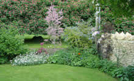
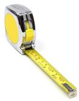
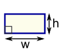
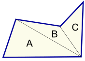
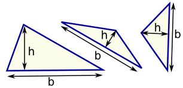
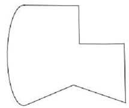
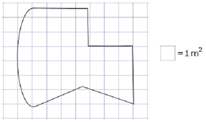
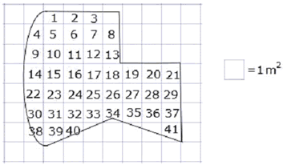

Activity: Garden Area

Have you ever wondered what the area of your garden is?
Let's try and discover!
You will need a garden, a tape measure, pen and paper ... and your brains.
I don't have a garden, so what can I do?
If you don't have a garden, maybe a friend or relative has one, or use part of a nearby park.

How accurate should my measurements be?
Try to measure to the nearest centimeter (or half-inch), so the error will be as small as possible.
You should get a good estimate, as long as you are careful with your measuring.
Is there a simple way to find the area of my garden?
If your garden is a rectangle, then you have a simple calculation. You just have to measure its width and length and multiply them together:
 |
Rectangle
|
But that makes this activity just too easy ...
... so go find another garden with a more interesting shape!
My garden is a difficult shape, so how can I find its area?
Good! This activity just got interesting ...
It may be one of the shapes on the page Area of Plane Shapes, then you just have to decide which shape, make the measurements, and use the formula.
But you could also break up your difficult shape into triangles:

Then measure the base (b) and height (h) of each triangle:

Measure the height h at a right angle (90°) from the base b
Write down each measurement carefully so you know which triangle it belongs to.
Now go inside and calculate each area (using Area = ½b × h) and add them all up.
But my garden is different ...
... in fact it's not any shape at all ... it has some straight edges and some curved parts. What should I do?
Maybe it looks something like this:

You could try covering your garden with a grid of squares – these could be 1 meter squares or 1 foot squares, something like this:

How do I make a grid?
Try using pegs in the ground and join them up with string. Make sure they are the right distance apart and all angles are right angles.
How does this help? The grid and the outline of the garden don't match. There are lots of corners and curved parts.
Count the squares!
There are special methods talked about on the Area page. The simplest method is:
- more than half a square counts as 1
- less than half a square counts as 0

An estimate for this area is 41 m2.
(This is just an example. Your garden is different of course.)
If your grid is 1 foot by 1 foot, then the area will be in square feet.
Why should I want to know the area of my garden?
There might be lots of reasons:
- You want to re-turf the garden. How much grass should you order? How much will it cost?
- You want to plant the garden with tomato plants. These have to be planted a certain distance apart. How many plants could you plant? What will be your expected yield of tomatoes?
- You want to hold a barbeque party. How many people could comfortably fit into your garden?
You can now do Activity: Grass for the Garden
I am finished ... what have I learned?
You have learned about measuring, recording data, drawing, and calculating area, well done!